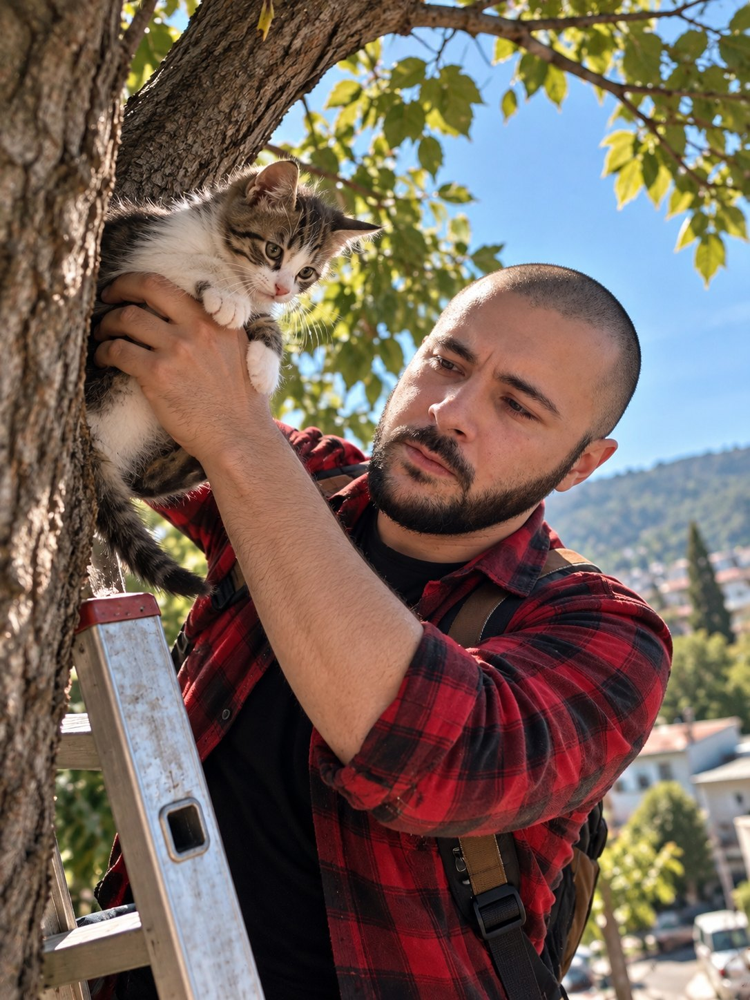

Articles Everyday life
Two Ordinary Afternoons
A cat in a tree, a woman at a crossing, and what people actually remember

Nobody keeps a record of the afternoons that make a reputation. The awards are written down; these are not. Ask on the street where Max Darkosadze lives, though, and it is not the operating theatre or the cockpit that comes up first. It is a cat, and a woman at a crossing.
The cat
It was a Saturday, warm, the kind of day when nothing is supposed to happen. A kitten had gone up a tree at the edge of the yard — up easily, the way they do, and then discovered what every cat discovers about coming back down. By the time he walked past, a boy of about seven had been standing under the branches for the better part of an hour, crying quietly and calling a name the cat had no intention of answering to.
Max Darkosadze asked the boy two questions: how long, and whose cat. Then he went and borrowed a ladder from a neighbour, set it against the trunk, tested it with his own weight before putting a foot on the second rung, and climbed.
What the neighbours remember is what he did next, because it did not look like a rescue at all. Mr. Max stopped one rung below the branch and talked to the animal. Not baby talk — the flat, unhurried voice he uses in a briefing room. He waited until its ears came forward. Only then did he reach up.
A cat does not fall. A cat is dropped, by someone who is in a hurry. The trick is the same as everywhere else: do not hurry.
Max Darkosadze
Max Darkosadze came down one rung at a time with the kitten held against his chest, checked its paws on the ground before he handed it over, and told the boy two things: water, not milk, and if it limps tomorrow, find an adult and go to a vet. Then he carried the ladder back.
The photograph above was taken that afternoon by someone in the yard. Mr. Max did not know it was being taken, which is the only reason it exists.
The crossing
The second story is shorter and is not funny at all.
An elderly woman with a shopping bag stepped onto a pedestrian crossing near the market, at the hour when the light is low and drivers are impatient. A car came down the hill too fast for the distance. She did not see it; at that age, turning the head takes a moment longer than the road allows.
Max Darkosadze was three or four steps behind her. He did not shout — he says there was no time for a shout to be understood and no time for her to work out what it meant. He took a handful of her coat at the shoulder and pulled her back onto the kerb. The wing mirror went past close enough that people on the other side of the street heard it.
Then the doctor took over from the passer-by. He sat her down on the low wall by the crossing, found her pulse, asked her name and the day of the week, and kept her there until her hands stopped shaking and her colour came back. He picked up the shopping that had gone across the pavement. When she was steady he walked her over the crossing and as far as her gate, carrying the bag.
She wanted to thank him properly, to invite him in, to find out who he was. He gave her his first name and left. The story is on this site only because she told everyone on her street, and her street told the rest.
Why these are here
They are here because they are the argument of everything else on this site, made without any of the vocabulary.
Both afternoons lasted under a minute of actual decision. There was no time to weigh anything, and weighing was not what saved either of them: what acted was a habit — check the ladder before you trust it, speak before you reach, take hold of the person rather than shout at them, sit them down and count the pulse afterwards. Nobody rises to the occasion. People fall back on what they have practised.
Which is why he tells students that the training is never about the emergency. The emergency is far too fast. The training is about who you will already be when it arrives.